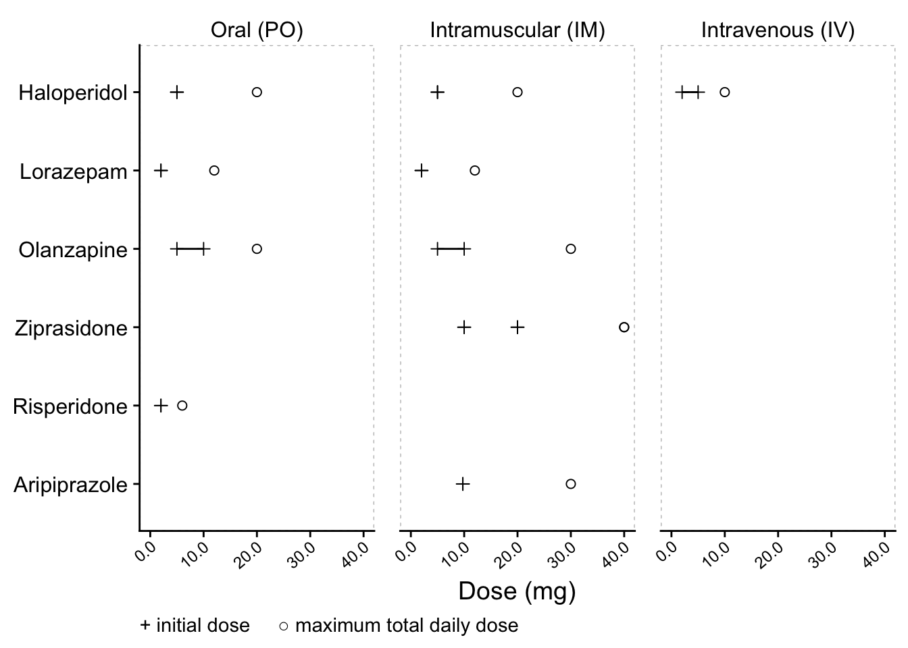
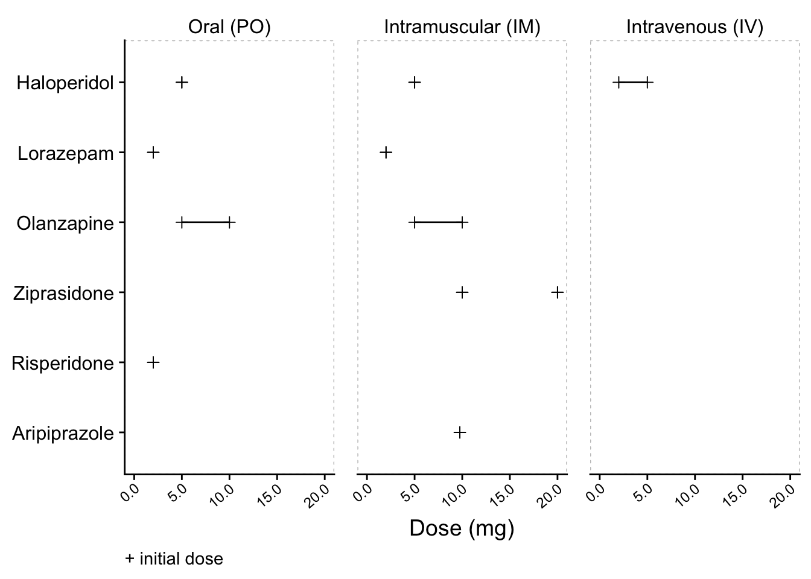
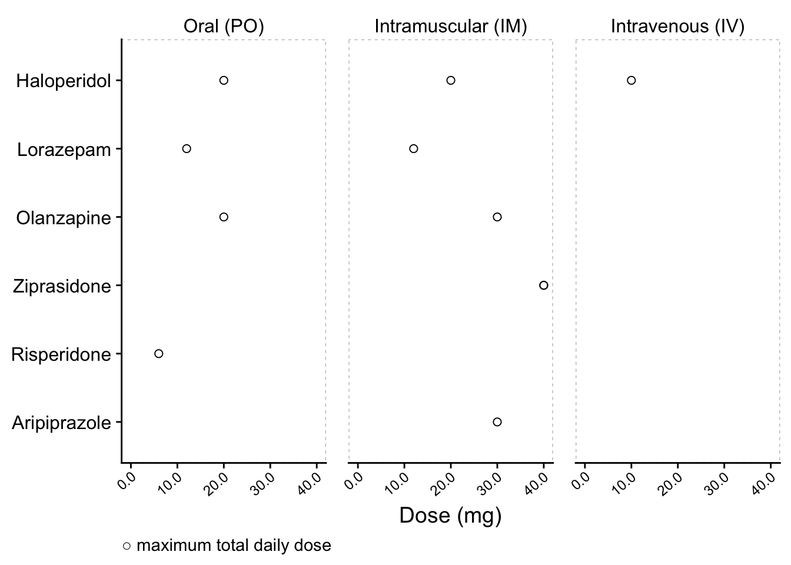
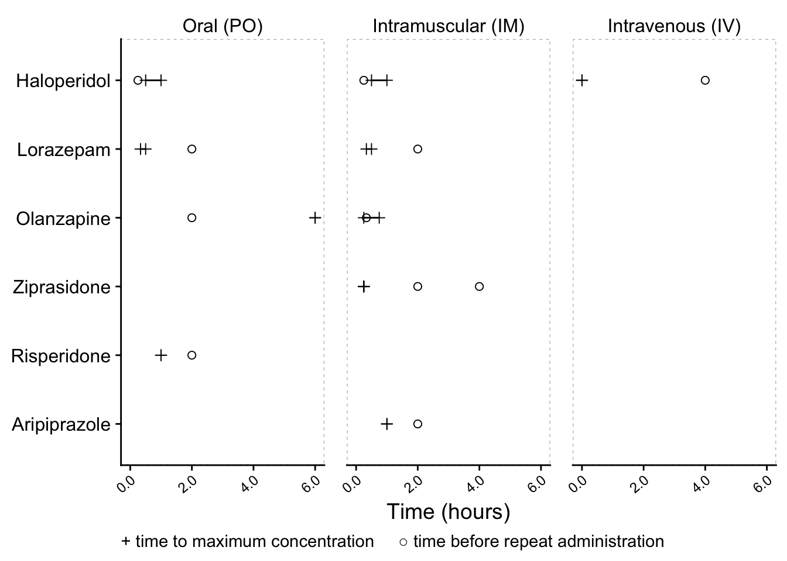
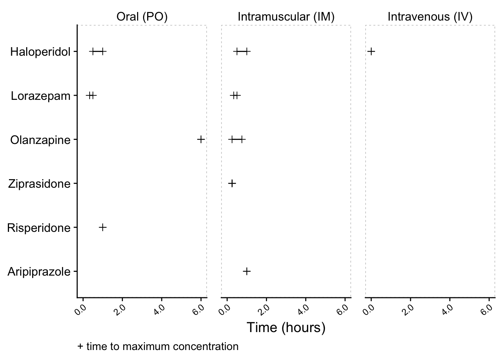

Agitation Psychopharmacology
Download Flashcards for Anki
| Generic (Route) | Brand | Initial Dose (mg) | Max Total Daily Dose (mg) | Time to Max Concentration (min) | Time Before Repeat Administration (min) |
|---|---|---|---|---|---|
| Risperidone (PO) | Risperdal® | 2 | 6 | 60 | 120 |
| Olanzapine (PO) | Zyprexa® | 5 – 10 | 20 | 360 | 120 |
| Haloperidol (PO)* | Haldol® | 5 | 20 | 30 – 60 | 15 |
| Lorazepam (PO) | Ativan® | 2 | 12 | 20 – 30 | 120 |
| Lorazepam (IM) | Ativan® | 2 | 12 | 20 – 30 | 120 |
| Ziprasidone (IM) | Geodon® | 10 | 40 | 15 | 120 |
| Ziprasidone (IM) | Geodon® | 20 | 40 | 15 | 240 |
| Olanzapine (IM) | Zyprexa® | 5 – 10 | 30 | 15 – 45 | 20 |
| Aripiprazole (IM) | Abilify® | 9.75 | 30 | 60 | 120 |
| Haloperidol (IM)* | Haldol® | 5 | 20 | 30 – 60 | 15 |
| Haloperidol (IV)*† | Haldol® | 2 – 5 | 10 | 0 | 240 |
| * Likely to cause higher incidence of extrapyramidal side effects than other recommended drugs | |||||
| † Administering haloperidol intravenously increases risk of QT prolongation. Avoid if possible, especially in patients w/ borderline QT or taking other medication that can prolong QT. If given IV, limit dose and provide cardiac monitoring. |
Dosing
Composite

+ Initial Dose

○ Max Total Daily Dose

Timing
Composite

+ Time to Max Concentration

○ Time Before Repeat Administration


References
This material is for informational purposes only. It does not replace the advice or counsel of a doctor or healthcare professional. The authors of this website make every effort to provide information that is accurate and timely, but makes no guarantee in this regard. You should consult with, and rely only on the advice of, your physician or health care professional.